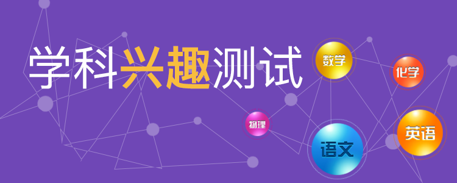

<!DOCTYPE html>
<html>
<head>
    <meta charset="UTF-8">
    <meta name="viewport" content="maximum-scale=1.0,minimum-scale=1.0,user-scalable=0,width=device-width,initial-scale=1.0"/>
    <meta name="format-detection" content="telephone=no,email=no,date=no,address=no">
    <title>端API</title>
    <link rel="stylesheet" type="text/css" href="../../css/api.css"/>
    <link rel="stylesheet" type="text/css" href="../../css/style.css"/>
    <link rel="stylesheet" type="text/css" href="../../css/aui.css"/>
    <style>
        .empty{ text-align: center; padding: 120px 0;}
        .top_img{
          width: 100%;
          height: 150px;

        }
        .occupation{
          position: absolute;
          text-align: center;
          width: 100%;
          margin-top: 50px;
        }
        .occupationText {
          font-family: 'PingFang-SC';
          font-size: 38px;
          font-weight: 500;
          text-align: left;
          color: #ffffff;
        }

      .text-style-1 {
        font-weight: 900;
        color: #f8bd3d;
      }
      .content{
        text-align: left;
        font-family: 'PingFang-SC';
        font-size: 16px;
        margin: 10px;
        text-indent: 2em;
        color: #333333;
      }
      .z-t{
        margin-top: 20px
      }
      .z-margin-t-35{
        margin-top: 35px
      }
      .z-col{
        background: #f5f5f5;
      }
      img{
        height: 100%!important;
        width: 100%!important;
      }
      </style>
</head>

<body>
    <!-- <div class="empty"> -->
      <div id="main" class="flex-con z-col" >
<script id="evaluationtmpl" type="text/x-dot-template">
      <!-- <div> -->
        <!-- <div class="occupation">
          <span class="occupationText">职业</span>
          <span class="occupationText text-style-1">兴趣</span>
          <span class="occupationText">测试</span>
        </div> -->
        
    <!-- </div> -->

    <p class="content">
      高中学生的学科兴趣开始逐渐从广泛到狭窄，有些同学甚至已经固定，学科兴趣的大致倾向性已经比较明确，因此根据学科兴趣来选专业是很重要的，而且可行。由于填报志愿时要选择的学科门类很多，对于高中学生而言，首先必须了解自己的学科兴趣类型，再结合自身潜能因素中的其他要素，才能科学选择适合自己的专业方向。
    </p>

    <div class="aui-content z-margin-t-35">
    <ul class="aui-list aui-media-list">
    {{for (var i = 0; i < it.length; i++) {}}
        <li class="aui-list-item " tapmode onclick="itemClick({{=i}})">
            <div class="aui-media-list-item-inner">
                <div class="aui-list-item-inner">
                    <div class="aui-list-item-text">
                        <div class="aui-list-item-title">学科兴趣报告{{= it[i].numbers}}</div>
                        <div class="aui-list-item-right">{{= it[i].time}}</div>
                    </div>
                </div>
            </div>
        </li>
        {{}}}
    </ul>
</div>
</script>
</div>
</body>
<script type="text/javascript" src="../../script/api.js"></script>
<script type="text/javascript" src="../../script/doT.js"></script>
<script type="text/javascript">
    var data;
    apiready = function(){
      data = $api.strToJson(localStorage.list_data);
      var conText = doT.template(document.getElementById('evaluationtmpl').innerHTML);
      document.getElementById('main').innerHTML = conText(data);

      // api.setRefreshHeaderInfo({
      //     loadingImg: 'widget://image/refresh.png',
      //     bgColor: '#ccc',
      //     textColor: '#fff',
      //     textDown: '下拉刷新...',
      //     textUp: '松开刷新...'
      //   }, function(ret, err) {
      //   //在这里从服务器加载数据，加载完成后调用api.refreshHeaderLoadDone()方法恢复组件到默认状态
      //   // alert("刷新");
      //   api.refreshHeaderLoadDone();
      // });

    };

    function itemClick(index) {

      api.showProgress({
          style: 'default',
          animationType: 'fade',
          title: '努力加载中...',
          text: '先喝杯茶...',
          modal: true
      });

      api.ajax({
          url: 'http://www.yxke12.com/index.php/App/Showbaogao/xueke.html',
          method: 'post',
          data: {
              values: {
                  studentid: $api.getStorage('studentid'),
                  num:data[index].numbers
              },
          }
      },function(ret, err){
          api.refreshHeaderLoadDone();
          api.hideProgress();
          console.log(JSON.stringify( ret ));
          localStorage.report_data = $api.jsonToStr(ret.data);
          if (ret) {
            if (ret.status == 100) {
                // ret.data;
                // console.log(JSON.stringify( ret ));
                api.openWin({
                    name: 'xueke_xingqu_report_win',
                    url: './xueke_xingqu_report_win.html',
                    pageParam: {
                        // data: ret.data,
                        source: 0
                    }
                });

            }else {
              api.toast({
              msg: JSON.stringify(ret.message),
              duration: 2000,
              location: 'bottom'
          });
            }
          } else {
            api.toast({
            msg: JSON.stringify(err.msg),
            duration: 2000,
            location: 'bottom'
        });
          }
      });
    }
</script>
</html>
